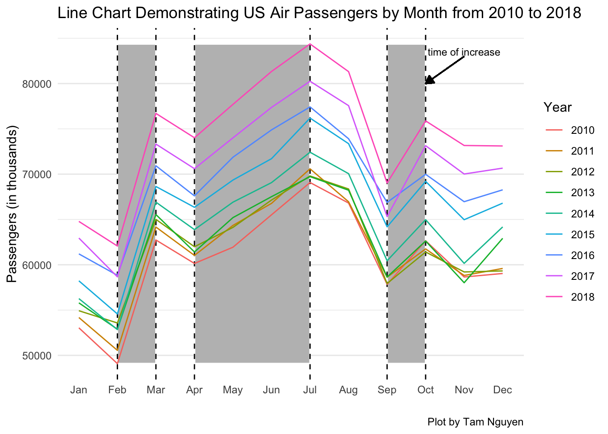

Rows: 7242 Columns: 7
── Column specification ────────────────────────────────────────────────────────
Delimiter: ","
chr (1): ISO3
dbl (6): Year, Month, Total, Domestic, International, Total_OS
ℹ Use `spec()` to retrieve the full column specification for this data.
ℹ Specify the column types or set `show_col_types = FALSE` to quiet this message.
Requirements: A good faith effort involves posing a research question, making a clean plot with good labeling that addresses that question, interpreting the plot in light of data limitations, and describing a next step in the investigation.
Research Question(s): How has air travel changed over the years? How does it differ by month?
us_monthly_passengers %>%mutate( month =month(Month)) %>%ggplot(aes(x = month, color =as.factor(Year)))+geom_rect(aes(xmin =2, xmax =3, ymin =min(Total), ymax =max(Total)), fill ="gray", alpha =0.1, show.legend =FALSE, color ="white") +geom_vline(xintercept =2, linetype ="dashed") +geom_vline(xintercept =3, linetype ="dashed") +geom_rect(aes(xmin =9, xmax =10, ymin =min(Total), ymax =max(Total)), fill ="gray", alpha =0.1, show.legend =FALSE, color ="white") +geom_vline(xintercept =9, linetype ="dashed") +geom_vline(xintercept =10, linetype ="dashed") +geom_rect(aes(xmin =4, xmax =7, ymin =min(Total), ymax =max(Total)), fill ="gray", alpha =0.1, show.legend =FALSE, color ="white") +geom_vline(xintercept =4, linetype ="dashed") +geom_vline(xintercept =7, linetype ="dashed") +geom_line(aes(y = Total))+geom_segment(aes(x =11, y =83000, xend =10, yend =80000), arrow =arrow(type ="closed", length =unit(0.1, "inches")), color ="black") +annotate("text", x =11, y =83500, label ="time of increase", color ="black", size =3) +scale_x_continuous(breaks = (1:12), labels = month.abb)+theme_minimal()+theme(panel.grid.major.x =element_blank(),# panel.grid.major.y = element_blank(),panel.grid.minor.x =element_blank(),# panel.grid.minor.y = element_blank() )+labs(x ="",y ="Passengers (in thousands)",title ="Line Chart Demonstrating US Air Passengers by Month from 2010 to 2018",color ="Year",caption ="Plot by Tam Nguyen")
Warning in geom_segment(aes(x = 11, y = 83000, xend = 10, yend = 80000), : All aesthetics have length 1, but the data has 108 rows.
ℹ Please consider using `annotate()` or provide this layer with data containing
a single row.

Intepretation: Air travel pattern has stayed consistently the same across all months during the time range given. That is it peaked during the summers and then dropped for the other months, even though it did experience sharp rises from Feb to Mar, as well as from Sep to Oct. Moreover, over the years, there have been more and more air travelers
Limitation: Things may have changed after the Covid year and the ones after, which are not included in the data. Additionally, I haven’t found an efficient way to integrate holidays data to examine the relationship between number of holidays, holiday length and air travel